ВСТУП
Визначення та важливість теми
Великий адронний колайдер-найбільший в світі прискорювач частинок, побудований в Європейському центрі ядерних досліджень (ЦЕРН) недалеко від Женеви, Швейцарія, в період з 1998 по 2008 грудня. Окружність Великого адронного колайдера (БАК) становить близько 27 км, протягом яких адрони прискорюються світловими променями і стикаються один з одним в особливих місцях.WAC-це тунель, що проходить через франко-Швейцарський кордон поблизу Женеви на глибині 50-175 метрів.
ВАК містить прискорювач та кілька детекторів, вмонтованих навколо точок зіткнення адронів. Частинки розганяють до енергії 7 ТеВ, тож при зіштовхненні енергія сягає 14 ТеВ. Ці показники вловлюють ключові детектори ATLAS та CMS. ВАК це найскладніша установка, будь-коли створена людством. Окремі компоненти будувалися десятки років і тестувалися в сотнях лабораторій.
Антиматерія представляє собою протилежну форму матерії, де частинки мають протилежні заряди та квантові властивості. Існування та вивчення антиматерії дозволяють краще розуміти фундаментальні закони природи та відкривають потенціал для розвитку нових технологій та застосувань у сучасному світі.
Антиматерія виникає при взаємодії великих енергій, таких як ті, які мають місце під час високоенергетичних ядерних реакцій чи у космічних процесах. Вона також може бути створена в лабораторних умовах, наприклад, при зіткненні часток в експериментах із прискорювачами частинок.
Адрони (від грецького "адрос", що означає "об'ємний") - це частинки що складаються з кварків. Протони і нейтрони, з яких складаються атомні ядра належать до цього сімейства. З іншого боку, лептони – це частинки, які не складаються з кварків. Електрони та мюони є прикладами лептонів (від грецького "лептос", що означає "тонкий").
Кварк — це фундаментальна частинка, яка разом з електронами та нейтрино є будівельним блоком матерії. Кварки вважаються елементарними частинками, тобто вони не складаються з більш дрібних частинок.
Спін – це внутрішня властивість елементарних частинок, а його напрямок є важливим ступенем свободи. Спін можна представити у вигляді вектора, довжина якого вимірюється у одиницях зменшеної сталої Планка ħ (читається як “h bar”). Для кварків вимірювання компоненти спінового вектора вздовж будь-якої осі може дати лише значення + ħ /2 або − ħ /2; з цієї причини кварки класифікуються як частинки зі спіном 1⁄2.
Мета та завдання роботи
Метою даної курсової роботи є дослідження антиматерії та адронного колайдера, принципів роботи, результатів досліджень, та преспективи в цих галузях.
В рамках дослідження будуть розглянуті:
- Будова адронного колайдера і його роль у науці
- Сутність антиматерії
- Вплив антиматерії у житті людини
- Складність добуття антиматерії
- Кварки, базон хикса, Глюон
- Спін
Аналізуючи ці фактори, ми сподіваємося зрозуміти, як побудован адронний колайдер, та як відкриття антиматерії вплинуло на людство, що воно принесло нового, та що ще сможе принести.
Адронний Колайдер
Передслово

Вели́кий адро́нний кола́йдер — найбільший у світі прискорювач елементарних частинок, збудований у Європейському центрі ядерних досліджень (CERN), поблизу Женеви (Швейцарія), між 1998 і 2008 роками.
Фінансується та розробляється науковцями з понад 100 країн світу та понад 10 тисяч науковців та інженерів приймають участь у цих дослідженнях.
Прискорювач пролягає в тунелі (у формі тора окружністю 27 км) на глибині до 175 метрів під землею на кордоні Франції та Швейцарії, поблизу Женеви, Швейцарії. Перших зіткнень вдалось досягти в 2010 році з енергією в 3,5 тераелектронвольт (ТеВ) на промінь, що приблизно в чотири рази перевищило попередній світовий рекорд. Після модернізації 2015 року вдалось отримати енергію 6,5 ТеВ на промінь (13 ТеВ загальна енергія зіткнення, сучасний світовий рекорд).
Розмір прискорювача пов'язаний з максимальною енергією, яку можна отримати. У випадку колайдера це також функція радіуса машини і сили магнітного поля, яке утримує частинки на своїх орбітах. ВАК повторно використовує тунель довжиною 27 км, який був побудований для попереднього великого прискорювача LEP. Тунель, магніти, порожнини та інші важливі елементи машини є основними обмеженнями, які визначають проектну енергію 7 Тев на протонний пучок.
ВАК прискорює два пучки частинок одного виду, або протонів, або іонів свинцю, які є адронами. Прискорювач може прискорювати лише певні типи частинок: по-перше, вони мають бути зарядженими (оскільки пучками керують електромагнітні пристрої, які можуть впливати лише на заряджені частинки), а по-друге, за винятком особливих випадків, вони мають бути стабільними. Це обмежує кількість частинок, які можна практично прискорити до електронів, протонів та іонів, а також до всіх їхніх античастинок.
У круглому прискорювачі, такому як ВАК, важкі частинки, такі як протони (протони приблизно в 2000 разів більші за електрони), мають набагато менші втрати енергії за оберт через синхротронне випромінювання, ніж легкі частинки, такі як електрони. Тому в кругових прискорювачах для отримання зіткнень з найбільшою енергією ефективніше прискорювати масивні частинки.
Історія побудови.
Проєкт був задуманий 1984 року, його реалізацію почали 2001-го. Для спорудження ВАК було використано існуючий тунель, в якому до 2000 року працював електрон-позитронний колайдер LEP.
1998 років чотири експерименти - ALICE, ATLAS, CMS і LHCb - отримали офіційне схвалення, і на чотирьох майданчиках розпочалися будівельні роботи. З того часу три менші експерименти (TOTEM, LHCf і MoEDAL) приєдналися до пошуків: TOTEM, встановлений поруч з CMS,і LHCf, поруч з ATLAS і MoEDAL розгорнутий у тій самій області перетину, що й детектор LHCb.
19 листопада 2006 закінчено будівництво спеціальної кріогенної лінії для охолодження магнітів.
Перший запуск був 10 вересня 2008 року, пучок частинок з енергією 450 гігаелектрон-вольт проведено по всьому кільцю колайдера.
30 березня 2010 року у Великому адронному колайдері вперше успішно здійснено зіткнення протонів, що рухалися зі швидкістю, наближеною до швидкості світла.
Передісторія:
5 квітня 1976 були запущені перші пучки протонів в новому 7-кілометровому прискорювачі у ЦЕРНі — протонний суперсинхротрон (SPS). Протони розганялися в ньому до рекордної енергії 400 ГеВ і прямували на нерухомі мішені. SPS продовжував успішно працювати і в еру LEP, і навіть у XXI столітті.
18 липня 1977 Був опублікований перший проект Великого електрон-позитронного колайдера (LEP) в ЦЕРНі, який буде встановлений в спеціальному кільцевому тунелі завдовжки майже 30 км. Тоді ж була висловлена і думка, що в майбутньому в тому ж тунелі можна буде розмістити і адронний коллайдер, який, можливо, буде працювати одночасно з LEP. Тому тунель для LEP проектувався з урахуванням такої можливості.
Початок робіт над створенням магнітів в 1981. Почалися розробки магнітів для ВАК — основи майбутнього колайдера. Магніти повинні були тримати поле близько 10 Тесла, а значить, їх необхідно робити надпровідними, але при цьому вони повинні вміщуватися в просторі підземного тунелю. Основний упор робився на конфігурацію «два в одному» (дві окремі вакуумні труби для зустрічних протонних пучків, поміщені в єдиний Кріостат), але розглядалися й інші варіанти. Конфігурація «два-в-одному» стала згодом емблемою ВАК.
Прокладання 27-кілометрового тунелю з січня 1983 по січень 1988.
Протягом 5 років у ЦЕРНі велися екскаваційні роботи з прокладанням кільцевого 27-кілометрового тунелю. У ньому розташовуэться Великий електрон-позитронного колайдера (LEP), а по закінченні його роботи, в 2000-і роки, в тому ж тунелі змонтують і Великий адронний колайдер. Прокладка тунелю стала найбільшим на той час екскаваціним проектом в Європі (рекорд був побитий в 1988 році, коли почалися роботи з прокладання підземного тунелю під Ламаншем.) Вартість цих робіт склала більше половини всього бюджету LEP
14 липня 1987 УЦЕРНі починає роботу проект LAA, завданням якого є вироблення загальних принципів, за якими будуть проектуватися детектори для майбутнього адронного колайдера.
Призначення та з якою метою ВАК був побудований.
Головне завдання Великого адронного колайдера — достовірно виявити хоч якісь відхилення від сукупності теорій, що становлять сучасне уявлення про фундаментальні частки та взаємодії. Незважаючи на свої переваги, вона має й труднощі: не визначає гравітаційну взаємодію, не пояснює існування темної матерії та темної енергії. Колайдер повинен допомогти відповісти на питання.
Один із шляхів об'єднання законів усіх фундаментальних взаємодій у рамках єдиної теорії — гіпотеза «суперсиметрії», в рамках якої передбачається існування важчого партнера у кожної відомої елементарної частки. Засновані на ній теорії найбільш популярні в області «Нової фізики» (зокрема, саме суперсиметричні частинки розглядаються як кандидати на роль гіпотетичних частинок темної матерії), і пошук її експериментальних підтверджень є одним із головних завдань роботи ВАК.
Важливим моментом на шляху до повнішої, ніж Стандартна модель, теорії, є вивчення хіггсовського механізму порушення симетрії електрослабкої взаємодії. Його, у свою чергу, найзручніше досліджувати через відкриття та вивчення бозона Хіггса. Він є квантом так званого поля Хіггса, при проходженні через яке частинки знаходять свою масу. Існування хіггсовського бозона було передбачено в 1964 році, і його пошук став однією з основних цілей проекту ВАК. Після довгоочікуваного оголошення про відкриття цієї частки у 2012 році наукова програма ВАК передбачає численні завдання щодо досконалого вивчення його властивостей.
Космологічні та астрофізичні спостереження показали, що на всю видиму матерію припадає лише близько 5% маси-енергії Всесвіту. Триває пошук частинок або явищ, відповідальних за темну матерію (27%) і темну енергію (68%). Дуже популярна ідея полягає в тому, що темна матерія складається з нейтральних, але ще не відкритих, суперсиметричних частинок.
Вивчення кварк-глюонної плазми.
Крім протон-протонних зіткнень, програма роботи Великого адронного колайдера передбачає такожзіткнення важких іонів. При зіткненні двох ультрарелятивістських ядер утворюється і потім розпадається щільна і дуже гаряча грудка ядерної речовини — кварк-глюонної плазми. Розуміння явищ, що відбуваються при переході в цей стан, в якому знаходилася речовина в ранньому Всесвіті, та її подальшому охолодженні, коли кварки стають пов'язаними, необхідне для побудови більш досконалої теорії сильних взаємодій, корисної як для ядерної фізики, так і для астрофізики.
Вивчення фотон-адронних та фотон-фотонних зіткнень.
Дослідження антиматерії та дослідження Т-кварків.
Дослідження темної енергії - це форма енергії, пов'язана з вакуумом у просторі, що становить приблизно 70% Всесвіту. Вона рівномірно розподілена у Всесвіті та часі, тобто її вплив не зменшується з розширенням Всесвіту. Рівномірний розподіл означає, що темна енергія не має локальних гравітаційних ефектів, але має глобальний вплив на Всесвіт в цілому. Це призводить до виникнення сили відштовхування, що призводить до прискорення розширення Всесвіту. Експериментальні вимірювання швидкості розширення та його прискорення, разом з іншими науковими даними, підтвердили існування темної енергії і були використані для оцінки її кількості.
Велику перевагу має коллайдер, де стикаються зустрічні промені над іншими типами прискорювачів, в яких стикається промінь і нерухома ціль. При зіткненні двох пучків енергія зіткнення є сумою енергій двох пучків. Промінь з тою самою енергією, яка вражає фіксовану ціль, призведе до зіткнення набагато менше енергії.
Доступна енергія в обох випадках це енергія центру мас. У першому випадку так і є просто сума енергій двох частинок, що стикаються (E = Eпроменя1 + Eпроменя2), тоді як у другому вона пропорційна до кореня квадратного з енергії частинки, що влучила в ціль(E ∝ √Eпроменя).
Будова ВАК
Прискорювальний комплекс в CERN - це послідовність машин з все більш високими енергіями. Кожна машина вводить промінь у наступний, який бере на себе завдання підняти промінь ще вище за енергію, і так далі. У Великому адронному колайдері (ВАК) — останньому елементі цього ланцюга — кожен пучок частинок прискорюється до рекордної енергії 6,5 ТеВ. Крім того, більшість інших прискорювачів у мережі мають свої власні експериментальні зали, де їх балки використовуються для дослідів при нижчих енергіях.
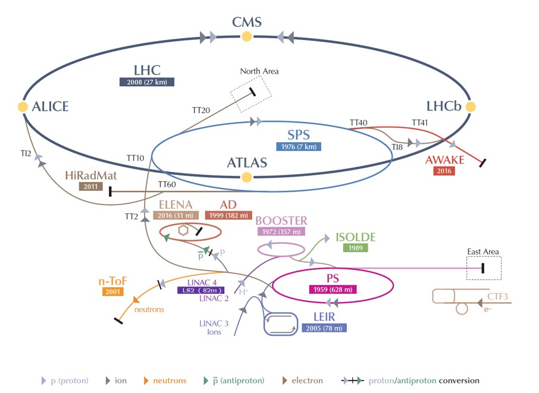Процес розгону протонів водню:
Беруть атоми водню взяті з пляшки з воднем. Далі отримують протони відриваючи їх від атому.Протони вводяться в PS Booster (PSB) з енергією 50 МеВ. Бустер розганяє їх до 1,4 ГеВ і потім подається на протонний синхротрон (PS), де він прискорюється до 25 ГеВ. Потім протони надсилаються до суперпротонного синхротрона (SPS) де вони розганяються до 450 ГеВ. Зрештою вони передаються на ВАК (обидва за годинниковою стрілкою і проти годинникової стрілки), де вони прискорюються 20 хвилин до 6,5 ТеВ.
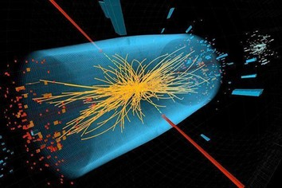Крім прискорення протонів, прискорювальний комплекс може також прискорювати іони свинцю. Іони свинцю виробляються з високоочищеного зразка свинцю, нагрітого до температури близько 800°C. Пари свинцю іонізуються електронним струмом. Утворюється багато різних станів заряду з максимумом навколо Pb29+. Ці іони відбираються та прискорюються до 4,2МеВ (енергія на нуклон) перед тим, як пройти крізь вуглецеву фольгу, яка розділяє більшість із них до Pb54+. Промінь Pb54+ накопичується, а потім прискорюється до 72 МеВ в кільці іонів низької енергії (LEIR), яке передає їх до PS. PS прискорює промінь до 5,9 ГeВ і направляє його до SPS після того, як спочатку пропустить його через другу фольгу, де він повністю звільняється до Pb82+.SPS прискорює його до 177 ГеВ, а потім надсилає на ВАК, який прискорює його до 2,56 ТeВ.
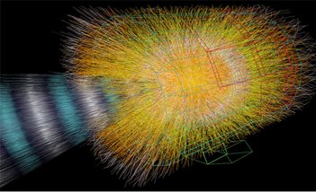ВАК не є ідеальним колом. Він складається з восьми дуг і восьми "вставок". Дуги містять дипольні "згинальні" магніти, по 154 в кожній дузі. Вставка складається з довгої прямої ділянки і двох (по одному на кожному кінці) перехідних ділянок - так званих "пригнічувачів дисперсії". Точне розташування прямої ділянки залежить від конкретного використання вставки: фізика (зіткнення пучків в експерименті), інжекція, скидання пучка, очищення пучка.
Сектор визначається як частина машини між двома точками вставки. Вісім секторів є робочими одиницями ВАК: встановлення магнітів відбувається сектор за сектором, апаратне забезпечення вводиться в експлуатацію сектор за сектором, і всі диполі сектора з'єднані послідовно і знаходяться в одному безперервному кріостаті. Живлення кожного сектора незалежне.
Октант починається з середини дуги і закінчується в середині наступної дуги, таким чином охоплюючи повну вставку. Тому цей опис є більш практичним, коли ми розглядаємо використання магнітів для спрямування променів на зіткнення або через секції впорскування, вивантаження та очищення.
У прискорювачі частинки циркулюють у вакуумній трубі і маніпулюють ними за допомогою електромагнітних пристроїв: дипольні магніти утримують частинки на майже кругових орбітах, квадрупольні магніти фокусують пучок, а прискорювальні порожнини є електромагнітними резонаторами, які прискорюють частинки, а потім утримують їх на постійній енергії, компенсуючи втрати енергії.
На ВАК встановлено 7 детекторів, розміщених у міжсекційних блоках. Два з них — ATLAS та CMS (Компактний мюонний соленоїд) — великогабаритні детектори загального призначення (англ. general-purpose detectors), розраховані для різноманітних досліджень, але конструктивно оптимізовані для пошуку бозона Хіггса та фізики за межами Стандартної Моделі.
ALICE (A Large Ion Collider Experiment, Іонний колайдерний експеримент) оптимізований для досліджень кварк-глюооної плазми та законів квантової хромодинаміки у зіткненнях важких йонів та протонів. LHCb (LHC beauty experiment) є четвертим за розміром експериментом, він оптимізований для досліджень CP-симетрії та пошуку фізики за межами Стандартної Моделі в розпадах адронів, що містять c- та b-кварки.
ATLAS — один з двох детекторів з широкою сферою функціонування з метою нових відкриттів та відповідей на старі питання. ATLAS має довжину 46 метрів, діаметр — 25 метрів і вагу близько 7000 тонн.
Експеримент є результатом співробітництва за участю близько 3000 фізиків з більш ніж 175 установ у 38 країнах світу. Проект очолювали протягом перших 15 років Пітер Дженні, між 2009 і 2013 — Фабіола Жданотті, а з 2013 року його очолює Девід Чарльтон.
ATLAS — це один з двох експериментів на ВАК, пов'язаних з відкриттям частинки, схожої на бозон Хіггса в липні 2012 року.
CMS — детектор з широкою сферою функціонування, котрий «полює» на бозони Хіггса і шукає природу походження темної матерії.
ALICE — вивчає «рідинну» форму існування матерії, відому як кварк-глюонна плазма, короткий проміжок існування якої виник відразу ж після Великого Вибуху.
LHCb — вивчає рівну кількість матерії та антиматерії, яка вивільняється після Великого вибуху. Намагається дати відповідь на питання: «Що сталося зі „зниклою“ антиматерією?»
На кожному з чотирьох основних детекторів працює окрема наукова колаборація, кожна з яких налічує понад тисячу фізиків та інженерів з десятків країн світу.
Окрім чотирьох основних експериментів, кожен з яких має свою точку зіткнення пучків, є додаткові невеликі експерименти, розташовані поруч з одним з основних, використовуючи частину їх інфраструктури. Такими є TOTEM (розташований біля CMS), LHCf (LHC forward experiment, розташований біля ATLAS), MOEDAL (розташований біля LHCb). Споруджується восьмий експеримент, FASER. Ці невеликі експерименти мають дуже вузьку галузь досліджень.
Вакуум у ВАК: Особливістю ВАК є наявність не однієї, а трьох вакуумних систем:
- ізоляційний вакуум для кріомагнітів
- ізоляційний вакуум для лінії розподілу гелію
- пучковий вакуум.
Тиск пучкового вакууму становить 10-13 атм (надвисокий вакуум), щоб уникнути зіткнень з молекулами газу. Найбільший об'єм, який потрібно відкачати в ВАК - це ізоляційний вакуум для кріомагнітів.
Магніти: У ВАК є велика різноманітність магнітів, включаючи диполі, квадруполі, секступолі, октуполі, декаполі і т.д., що в цілому дає близько 9600 магнітів. Кожен тип магніту робить свій внесок в оптимізацію траєкторії частинки. Більшість коригувальних магнітів вбудовано в холодну масу головних диполів і квадруполів. Магніти ВАК мають або подвійну апертуру (наприклад, головні диполі), або одинарну апертуру (наприклад, деякі з потрійних квадруполів кінцевого фокусування). Вставні квадруполі - це спеціальні магніти, які використовуються для фокусування пучка до найменшого можливого розміру в точках зіткнення, тим самим максимізуючи ймовірність того, що два протони вдаряться лоб в лоб один об одного. Найбільшими магнітами є 1232 диполі.
Порожнини: Основна роль порожнин ВАК полягає в тому, щоб утримувати пучки 2808 протонів щільно скупченими, щоб забезпечити високу світність у точках зіткнення і максимізувати кількість зіткнень. Вони також передають пучку радіочастотну енергію під час прискорення до максимальної енергії. Надпровідні порожнини з малими втратами енергії і великим запасом енергії є найкращим рішенням. У ВАК використовується вісім порожнин на пучок, кожна з яких забезпечує 2 МВ (прискорювальне поле 5 МВ/м) на 400 МГц. Порожнини працюють при температурі 4,5 К (-268,7ºC) (магніти ВАК використовують надплинний гелій при 1,9 К або -271,3ºC). Для ВАК вони згруповані по чотири в кріомодулі, по два кріомодулі на пучок, і встановлені в довгій прямій секції машини, де поперечна міжпучкова відстань збільшена зі звичайних 195 мм до 420 мм.
Диполі: Диполі ВАК є особливими з кількох причин. По-перше, вони становлять значний технологічний виклик для конструкції ВАК. У такому прискорювачі протонів, як ВАК, максимально досяжна енергія безпосередньо пов'язана з напруженістю дипольного поля, враховуючи певне коло прискорення. Диполі ВАК є надпровідними електромагнітами, які мають вирішальне значення для забезпечення необхідної високої напруженості поля 8,3 Тл по всій їхній довжині.
Використання надпровідних ніобієво-титанових (NbTi) кабелів у диполях ВАК є ще однією відмінною рисою. Ці кабелі стають надпровідними при температурі нижче 10 К (-263,2°C), що дозволяє їм проводити електрику без опору. ВАК працює при надзвичайно низькій температурі 1,9 K (-271,3°C), навіть нижчій за температуру космічного простору (2,7 K ,-270,5°C). Струм 11 850А протікає в диполях, створюючи високе магнітне поле 8,33 Тл, необхідне для огинання пучків з енергією 7 ТэВ навколо 27-кілометрового кільця ВАК.
Цей акцент на надпровідності має вирішальне значення, оскільки робота магнітів при вищій температурі, наприклад, 4,5 К (-268,7°C), обмежила б струм, який вони можуть витримати, до приблизно 8500 А, створюючи магнітне поле приблизно 6 Тл. Температура 1,9 К (-271,3°C) досягається завдяки закачуванню надплинного гелію в магнітні системи. Кожен диполь має довжину 15 м і важить близько 35 тон.
Магнітні котушки ВАК: намотуються на кабель, що складається з 36 скручених 15-міліметрових жил, кожна з яких, у свою чергу, складається з 6000-9000 окремих ниток, кожна з яких має діаметр лише 7 мікрометрів.
Кріогенна система ВАК є найбільшою кріогенною системою у світі та одним з найхолодніших місць на Землі. Така низька температура необхідна для роботи магнітів, які утримують протони на курсі (див. питання: "Що такого особливого в диполях ВАК?"). Щоб підтримувати 27-кілометрове кільце (4700 тонн матеріалу в кожному з восьми секторів) при температурі надплинного гелію (1,9 К, -271,3°C), кріогенна система ВАК повинна забезпечувати безпрецедентну загальну потужність охолодження - близько 150 кВт для холодильників при 4,5 К і 20 кВт для холодильників при 1,9 К. Схема холодильної системи базується на п'яти "кріогенних островах". Кожен "острів" повинен розподіляти холодоагент і переносити кіловати холодильної потужності на велику відстань. Весь процес охолодження займає кілька тижнів.
Перша фаза розгортається у два етапи: спочатку гелій охолоджується в теплообмінниках холодильників до 80 К, використовуючи близько 10 000 тонн рідкого азоту. Потім турбіни холодильників знижують температуру гелію до 4,5 K (-268,7ºC), роблячи його готовим до впорскування в холодну масу магнітів. Після заповнення магнітів холодильні установки знижують температуру до 1,9 K (-271,3ºC).
Загалом потрібно близько 120 тонн гелію, з яких приблизно 90 тонн виділяється для магнітів, а решта розподіляється між трубами і холодильними установками. Примітно, що протокол уникає прямого впорскування рідкого азоту в ВАК, щоб запобігти будь-якому потенційному джерелу асфіксії в підземному тунелі.
Вибір робочої температури для ВАК так само пов'язаний з "супер" властивостями гелію, як і з властивостями надпровідного ніобієво-титанового сплаву в котушках магнітів. За атмосферного тиску газ гелій зріджується при температурі близько 4,2 K (-269,0 °C), але при подальшому охолодженні він зазнає другої фазової зміни при температурі близько 2,17 K (-271,0 °C) до "надплинного" стану. Серед багатьох чудових властивостей надплинний гелій має дуже високу теплопровідність, що робить його найкращим холодоносієм для охолодження і стабілізації великих надпровідних систем.
Загалом, кріогенна система ВАК потребує близько 40 000 герметичних з'єднань труб, і 120 т гелію потрібно машині ВАК, щоб підтримувати робочу температуру магнітів на рівні 1,9 К. Під час нормальної роботи більша частина гелію циркулює в замкнутих холодильних контурах. Тим не менше, щороку певний відсоток запасів втрачається через зупинки установки, витоки в атмосферу, кондиціонування установок та експлуатаційні проблеми.
Протони ВАК циркулюють навколо кільця у чітко визначених пучках. Пучкова структура сучасного прискорювача є прямим наслідком радіочастотної схеми прискорення. Протони можна прискорювати лише тоді, коли радіочастотне поле має правильну орієнтацію при проходженні частинок через прискорювальну порожнину, що відбувається в чітко визначені моменти під час радіочастотного циклу. У ВАК, за номінальних умов роботи, кожен протонний пучок має 2808 пучків, кожен з яких містить близько 1011 протонів.
Розмір пучка не є постійним по всьому кільцю. Кожен пучок, коли він циркулює навколо ВАК, стискається і розширюється - наприклад, він максимально стискається навколо точок взаємодії, щоб збільшити ймовірність зіткнення. Коли частинки знаходяться далеко від точки зіткнення, їхні розміри становлять кілька сантиметрів завдовжки і міліметр завширшки. Однак, коли вони наближаються до точок зіткнення, вони стискаються приблизно до 20 мм (товщина людської волосини - близько 50 мм), щоб збільшити ймовірність протон-протонних зіткнень. Збільшення кількості пучків - один із способів підвищити світність у машині. При повній світності ВАК використовує відстань між пучками 7,5 м.
Інтервал між пучками 7,5 м відповідає частоті 40 МГц, що означає, що пучки повинні проходити кожну з точок зіткнення в ВАК 40 мільйонів разів на секунду. Однак, з практичних міркувань, є кілька більших проміжків у структурі пучків, які дають час, наприклад, магнітам-"кікерам" увімкнутися, щоб інжектувати або скинути пучки. Середня частота перетину пучків у ВАК становить близько 30 МГц.
Кожен промінь складається з майже 3000 пучків частинок, а кожен пучок містить до 100 мільярдів частинок. Частинки настільки малі, що ймовірність зіткнення будь-яких двох частинок дуже мала. Коли пучки перетинаються, відбувається до 40 зіткнень між 200 мільярдами частинок. Пучки перетинаються в середньому близько 30 мільйонів разів на секунду, тому ВАК генерує близько 1 мільярда зіткнень частинок на секунду.
Промінь може циркулювати понад 10 годин, подолавши понад 10 мільярдів кілометрів - достатньо, щоб дістатися планети Нептун і повернутися назад. На швидкості, близькій до швидкості світла, протон у ВАК робить 11 245 кіл щосекунди.
Енергоспоживання ВАК становить близько 120 МВт (230 МВт для всього ЦЕРН), що відповідає приблизно 1/3 енергоспоживання домогосподарств у кантоні (штаті) Женева. Річне енергоспоживання ЦЕРН становить близько 1,3 ТВт-год (2015 рік). Це включає в себе базове навантаження на майданчик та експерименти. Загальна річна вартість експлуатації ВАК становить близько 19 мільйонів євро. ЦЕРН забезпечується переважно французькою компанією EDF (швейцарські компанії EOS і SIG використовуються лише у випадку дефіциту з Франції).
Значна частина електроенергії, яку споживає ВАК, йде на підтримання системи надпровідних магнітів при робочих температурах (1,8 і 4,2 К) залежно від магнітів. Завдяки надпровідній технології, що використовується для його магнітів, номінальне споживання ВАК не набагато вище, ніж у Суперпротонного синхротрона (SPS), хоча ВАК набагато більший за розмірами і має вищу енергію.
| Діаметр окружності | 26 659 м |
| Робоча температура диполя | 1.9 K (-271.3ºC) |
| Кількість магнітів | 9593 |
| Кількість основних диполів | 1232 |
| Кількість основних квадруполів | 392 |
| Кількість радіочастотних порожнин | 8 в кожному напрямку |
| Енергія протонів | 6.5 TeВ(на практиці 7 TeВ) |
| Енергія іонів | 2.56 ТеВ/у (Енергія на нуклон) |
| Пікове магнітне дипольне поле | 7.74 T |
| Відстань між пучками | ~7.5 м |
| Світність (протони) | ~7.5 м |
| Кількість пучків на протонний пучок (розрахункове значення) | ~ 1.2 x 1034 cм-2 s-1 |
| Кількість протонів у пучку (на старті) | 1.2 x 1011 |
| Кількість обертів за секунду | 11 245 |
| Кількість зіткнень на секунду | 1 мільярд |
Детектори:
ALICE - це детектор, що спеціалізується на вимірюванні та аналізі зіткнень між свинцем та іонами. Він вивчає властивості кварк-глюонної плазми - стану матерії, в якому кварки і глюони в умовах дуже високих температур і густини більше не обмежені всередині адронів. Такий стан матерії, ймовірно, існував одразу після Великого вибуху, до того, як були утворені такі частинки, як протони і нейтрони. Міжнародна співпраця налічує понад 1800 учасників з 174 інститутів з 42 країн світу.
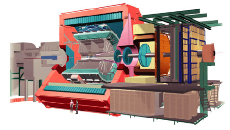| Розмір | 26м в довжину, 16м в висоту, 16м в ширину |
| Вага | 10 000 тон |
| Місце розташування | Сержи, Франція |
ATLAS - це детектор призначений для охоплення якомога ширшого спектру фізичних досліджень на ВАК, від прецизійних вимірювань бозона Хіггса до пошуків нової фізики за межами Стандартної моделі. Головною особливістю детектора ATLAS є його величезна система магнітів у формі пончика. Вона складається з восьми 25-метрових котушок надпровідних магнітів, розташованих у вигляді циліндра навколо променевої труби, що проходить через центр детектора. ATLAS є найбільшим за об'ємом колайдером-детектором з коли-небудь побудованих. У його роботі беруть участь майже 3000 наукових авторів з 182 установ у 38 країнах світу.
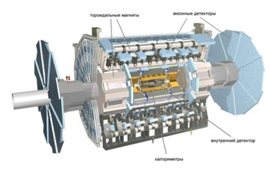| Розмір | 46м в довжину, 26м в висоту, 26м в ширину |
| Вага | 7000 тон |
| Місце розташування | Мейрин, Швейцарія |
CMS - це детектор загального призначення з подібними до ATLAS фізичними цілями, але з іншими технічними рішеннями і конструкцією. Він побудований навколо величезного надпровідного соленоїда. Він має форму циліндричної котушки надпровідного кабелю, яка генерує магнітне поле в 4 Тл. У роботі над CMS беруть участь понад 3500 вчених, інженерів і студентів з 201 інституту в 36 країнах світу.
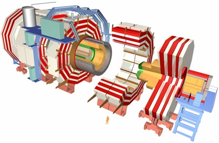| Розмір | 21м в довжину, 15м в висоту, 15м в ширину |
| Вага | 7000 тон |
| Місце розташування | Мейрин, Швейцарія |
LHCb спеціалізується на вивченні незначної асиметрії між речовиною та антиречовиною, яка присутня у взаємодіях B-частинок (частинок, що містять b-кварк). Розуміння цього явища має стати неоціненним для відповіді на питання: "Чому наш Всесвіт складається з матерії, яку ми спостерігаємо?". Експеримент LHCb використовує серію субдетекторів для виявлення і вимірювання розпаду частинок, що утворюються в одному з напрямків пучка. Перший субдетектор будується навколо точки зіткнення, за ним слідує послідовність інших субдетекторів уздовж лінії пучка на довжині 20 м. У колаборації LHCb беруть участь понад 1200 учасників з 71 інституту з 16 країн.
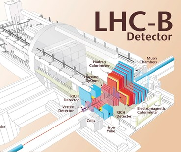| Розмір | 21м в довжину, 10м в висоту, 13м в ширину |
| Вага | 5600 тон |
| Місце розташування | Ферне-Вольтер, Франція |
LHCf - це невеликий експеримент, який вимірює частинки, що утворюються дуже близько до напрямку пучків у протон-протонних і протон-ядерних зіткненнях на ВАК. Мотивація полягає в тому, щоб перевірити моделі, які використовуються для оцінки первинної енергії надвисокоенергетичних космічних променів. Детектори розташовані на відстані 140 м від точки зіткнення ATLAS. У колаборації беруть участь близько 30 членів з 14 інститутів у 4 країнах.
| Розмір | два детектори, кожен довжиною 30 см, 60 см в висоту, 10 см в ширину |
| Вага | 40 кг кожен |
| Місце розташування | Мейрін, Швейцарія (поблизу ATLAS) |
MOEDAL (MOnopole and Exotics Detector At the LHC) - це невеликий експеримент з пошуку гіпотетичних високоіонізуючих частинок, таких як магнітні монополі. Детектор складається з масиву з 400 детекторів ядерних треків, кожен з яких складається зі стопки з 10 листів пластикового сцинтилятора, загальною площею 250 кв.м, розташованих навколо точки зіткнення поблизу центру детектора LHCb. MOEDAL налічує 16 членів з 15 інститутів у 7 країнах.
| Розмір | 70 коробок розміром 0,5 м х 0,75 м |
| Вага | 500 кг |
| Місце розташування | Ферне-Вольтер, Франція (поблизу LHCb) |
TOTEM вимірює ефективний розмір або "поперечний переріз" протона в ВАК. Для цього TOTEM повинен бути здатним виявляти частинки, що утворюються дуже близько до пучків ВАК. Для цього потрібні детектори, розміщені в спеціально сконструйованих вакуумних камерах, так званих "римських горщиках", які з'єднані з пучковими трубами ВАК. Двадцять шість римських горщиків розміщені попарно в чотирьох місцях поблизу точки зіткнення в експерименті CMS. TOTEM налічує понад 160 членів з 11 інститутів у 8 країнах.
| Розмір | 8 датчиків, розподілених на 440 м |
| Вага | 20 тон |
| Місце розташування | Сессі, Франція(поблизу CMS) |
Сучасний детектор фізики високих енергій загального призначення, такий як ATLAS або CMS, має бути герметичним, щоб існувала лише невелика ймовірність того, що частинка (яку можна виявити) пролетить непоміченою через область, яка не контролюється приладами. Для інженерної зручності більшість сучасних детекторів на колайдерах частинок, таких як ВАК, мають конструкцію "ствол плюс торцеві заглушки", де циліндричний детектор покриває центральну область, а дві плоскі круглі "торцеві заглушки" покривають кути, близькі до пучка (передня область). ALICE і LHCb мають асиметричну форму, оскільки вони зосереджені на більш специфічних галузях фізики.
Які основні компоненти детектора?
Мета великих детекторів, встановлених на ВАК, - ідентифікувати вторинні частинки, що утворюються при зіткненнях, і вимірювати їхні положення в просторі, заряди, швидкість, масу та енергію. Для цього детектори мають багато шарів або "субдетекторів", кожен з яких відіграє певну роль у реконструкції зіткнень. Завершує конструкцію система магнітів. Її функція полягає в тому, щоб розділити різні частинки відповідно до їхнього заряду і дозволити виміряти їхній імпульс - фізичну величину, пов'язану з масою і швидкістю частинки.
Прилади для відстеження виявляють треки електрично заряджених частинок за слідами, які вони залишають, іонізуючи речовину. У магнітному полі вони можуть бути використані для вимірювання кривизни траєкторії частинки і, отже, її імпульсу. Це може допомогти в ідентифікації частинки. Більшість сучасних пристроїв для відстеження не роблять треки безпосередньо видимими. Натомість вони виробляють електричні сигнали, які можна записати. Комп'ютерна програма реконструює патерни записаних треків.
Два спеціалізовані типи трекінгових пристроїв - це вертексні детектори та мюонні камери. Вершинні детектори розташовуються близько до точки взаємодії (первинної вершини); мюонні камери розташовуються на зовнішніх шарах детектора, оскільки мюони - єдині заряджені частинки, здатні проходити крізь метри щільного матеріалу.
Існує два основних способи побудови пристроїв стеження:
- Газоподібні камери: У цьому методі іонізованим середовищем є газ, а іони або електрони збираються на електродах, зазвичай у вигляді дротів або прокладок під сильним електричним полем. У дрейфових камерах положення треку знаходять, вимірюючи час, за який електрони досягають анодного дроту, вимірюваний з моменту проходження зарядженої частинки. Це призводить до вищої просторової роздільної здатності для ширшого розділення дротів; дрейфові камери зазвичай мають кілька сантиметрів у поперечнику, що дає просторову роздільну здатність 50-100 мм. У камері часової проекції об'єм дрейфу набагато більший, до 2 м і більше, а чутливі дроти розташовані на одній торцевій поверхні.
- Напівпровідникові детектори: У цьому методі частинка створює електрони і дірки при проходженні через напівпровідник зі зворотним зміщенням, зазвичай кремній. Пристрої поділяються на смужки або пікселі, а типова роздільна здатність становить 10 мм.
Калориметри - це прилади, призначені для вимірювання енергії частинок шляхом їх зупинки та вимірювання кількості енергії, що виділяється. Існує два основних типи калориметрів: електромагнітні (ECAL) та адронні (HCAL). Вони використовують різні матеріали залежно від їхнього призначення. ECAL, як правило, повністю поглинає електрони і фотони, які взаємодіють за допомогою електромагнітної сили. Сильно взаємодіючі частинки (адрони), такі як протони і піони, починають втрачати енергію в ECAL, але будуть зупинені лише в HCAL. Мюони (і нейтрино) будуть проходити через обидва шари. Калориметри дозволяють ідентифікувати нейтральні частинки, такі як фотони і нейтрони. Хоча ці частинки не видно в пристроях для відстеження, їх можна виявити за енергією, яку вони позичають в калориметрах.
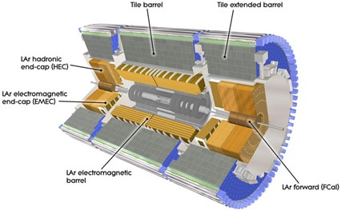Калориметри зазвичай складаються з шарів "пасивного" або "поглинаючого" матеріалу високої щільності, наприклад, свинцю, що чергуються з шарами "активного" середовища, наприклад, пластикових сцинтиляторів або рідкого аргону.
Детектори також часто мають субдетектори, що вимірюють швидкість заряджених частинок, що є важливим фактором для ідентифікації частинок.
Існує два важливих методи вимірювання швидкості частинок:
- Черенковське випромінювання: Коли заряджена частинка проходить через середовище з певною швидкістю, вона випромінює фотони під певним кутом, який залежить від швидкості. У поєднанні з вимірюванням імпульсу частинки, швидкість можна використовувати для визначення маси і, отже, ідентифікації частинки. Черенковське випромінювання виникає, коли частинка рухається швидше за швидкість світла в середовищі.
- Перехідне випромінювання: Коли релятивістська заряджена частинка перетинає неоднорідне середовище, особливо межу між матеріалами з різними електричними властивостями, вона випромінює випромінювання більш-менш пропорційно до своєї енергії. Це дозволяє відрізнити типи частинок один від одного.
Майбутнє ВАК
Дослідження Future Circular Collider (FCC) розробляє проекти для нової дослідницької інфраструктури для розміщення наступного покоління більш продуктивних колайдерів частинок для розширення досліджень, які зараз проводяться на LHC, коли фаза високої світності (HL-LHC) досягне свого завершення приблизно в 2040 році.
Метою FCC є розсунути кордони енергії та інтенсивності коллайдерів частинок з метою досягнення енергії зіткнення 100 ТеВ у пошуках нової фізики.
Міжнародне співробітництво понад 150 університетів, науково-дослідних інститутів і промислових партнерів з усього світу розробляє можливості для кругових колайдерів, нових детекторів, відповідної інфраструктури, оцінки витрат, глобальних сценаріїв впровадження, а також відповідних міжнародних структур управління.
FCC розглядає сценарії для трьох різних типів зіткнень частинок: адронних (протон-протонних і важких іонних) зіткнень, як у LHC (FCC-hh), електрон-позитронних зіткнень (FCC-ee), як у попередньому LEP. Інші варіанти включають протонно-електронні зіткнення або зіткнення протонних важких іонів.
Зараз вчені проводять дослідження фізики та детектора для кожного варіанту. Паралельно спеціалізовані групи експертів проводять поглиблений аналіз інфраструктури, операційних концепцій і необхідних ключових технологій.
Звіт про концептуальний дизайн FCC був поданий як внесок до оновлення Європейської стратегії з фізики елементарних частинок на 2020 рік. Після ухвалення цього оновлення Радою CERN у 2020 році CERN отримав повноваження провести технічне та фінансове обґрунтування для FCC, щоб бути готовим до наступного оновлення стратегії, запланованого на 2027 рік.
Матерія та Антиматерія
Визначення матерії та антиматерії
Мате́рія (англ. matter, substance) — основа буття, яка проявляється у всій різноманітності і багатогранності об'єктів, процесів, явищ мікро-, макро- і мегасвіту. Існує в русі, розвитку та взаємоперетвореннях.
Традиційно у фізичній картині світу виділяють два фундаментальні види матерії — речовину та фізичні поля. Однак, такий поділ є умовним, оскільки в рамках квантової теорії поля будь-яка частинка описується квантованим фізичним полем. Квантування полів надає їм ознаки корпускулярності. Різниця між, наприклад, електронами, які традиційно вважають частинками речовини, і електромагнітним полем у тому, що кванти електромагнітного поля, фотони, є бозонами, тоді як електрони — ферміонами. Іншою ознакою, за якою матерію можна поділити на речовину й фізичні поля, є наявність або відсутність маси. Якщо застосовувати таку класифікацію, то W- і Z-бозони слід віднести до речовини, тоді як нейтрино — до полів. Загалом, для фізиків такий поділ несуттєвий.
Останніми роками для пояснення прискорення розширення Всесвіту, про що свідчать астрономічні спостереження, виникла необхідність гіпотезувати існування нового виду матерії, яка отримала назву темної енергії. Природа темної енергії залишається нез'ясованою.
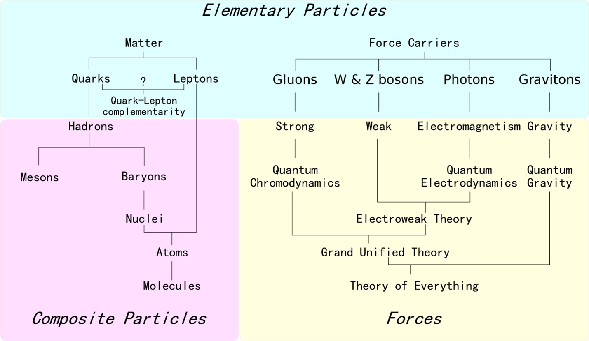Основні види матерії:
-
Речовина
- Адронна речовина — її складовими частинками є адрони.
- Баріонна речовина (баріонна матерія) — речовина, що складається з баріонів.
- Речовина в класичному розумінні. Складається переважно з ферміонів. Ця форма матерії домінує в Сонячній системі та в найближчих зоряних системах.
- Антиречовина — складається з античастинок.
- Нейтронна речовина — складається переважно з нейтронів і позбавлена атомної будови. Основний компонент нейтронних зір, з густиною, істотно більшою, ніж у звичайної речовини, але меншою, ніж у кварк-глюонної плазми.
- Інші види речовин, що мають атомоподібну будову (наприклад, речовина, утворена мезоатомами з мюонами).
- Кварк-глюонна плазма — надщільна форма речовини, що існувала на ранній стадії еволюції Всесвіту до об'єднання кварків у класичні елементарні частинки (до конфайнменту).
- Гіпотетичні докваркові надщільні матеріальні утвори, складові яких — струни та інші об'єкти, з якими оперують теорії великого об'єднання (див. теорія струн, теорія суперструн). Основні форми матерії, які, ймовірно, існували на ранній стадії еволюції Всесвіту. Струноподібні об'єкти в сучасній фізичній теорії претендують на роль найфундаментальніших матеріальних утворів, до яких можна звести всі елементарні частинки, тобто врешті-решт, усі відомі форми матерії. Такий рівень аналізу матерії, можливо, дозволить пояснити з єдиних позицій властивості різних елементарних частинок. Належність до «речовини» тут слід розуміти умовно, оскільки відмінність між речовою і польовими формами матерії на цьому рівні стирається.
-
Поле (в класичному сенсі):
- Електромагнітне поле.
- Гравітаційне поле.
- Квантові поля різної природи. За сучасними уявленнями квантове поле є універсальною формою матерії, до якої можна звести як речовини, так і класичні поля, при цьому існує нечіткий поділ на речовинні поля (лептонні й кваркові поля ферміонної природи) і поля взаємодій (глюонні сильні, проміжні бозонні слабкі і фотонне електромагнітне поля бозонної природи, сюди ж відносять поки гіпотетичне поле гравітонів). Осібно серед них стоїть поле Хіггса, яке складно віднести однозначно до будь-якої з цих категорій.
- Матеріальні об'єкти неясної фізичної природи:
- Темна матерія.
- Темна енергія.
Тож з чого скаладеться матерія?
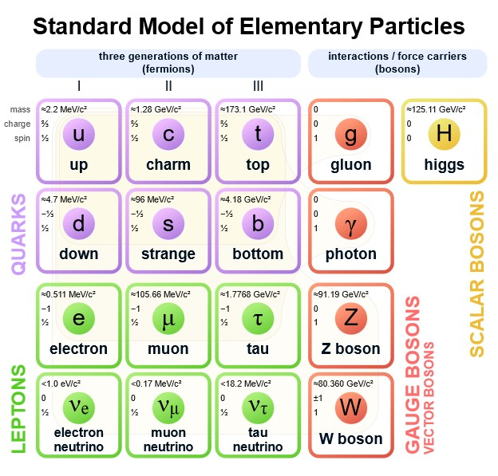Кожен атом складеться з кварків, та глюона.
Також, більшість кварків представлених нижче були відкриті та існували тільки на колайдері.
Стандартна модель елементарних частинок передбачає шість видів кварків: верхній (u), нижній (d), зачарований (c), дивний (s), істинний (t) та чарівний (b). Комбінації цих кварків утворюють багатий спектр стабільних та нестабільних частинок, які ми спостерігаємо в експериментах високих енергій.
Основні характеристики кварків:
- Електричний Заряд: Кварки мають електричний заряд, але вони не можуть існувати окремо, завжди знаходячись в складі багатоцвітних комбінацій, так званих мезонів та баріонів.
- Маса: Кварки мають дуже малу масу. Наприклад, порівняно з електроном, маса кварку є більшою, але в порівнянні з атомним ядром - дуже малою.
- Колірний Заряд: Кварки несуть колірний заряд - внутрішню характеристику, яка відповідає сильній взаємодії, що відповідає за сприяння створенню ядер. Кварки можуть мати колір "червоний", "зелений" або "синій", і комплектуються так, щоб утворювати безколірні комбінації.
Спін: Кварки мають спін 1/2, що вказує на їхню ферміонну природу (частинки з половинним спіном), і вони підпорядковані принципам квантової механіки.
Глюон — електрично нейтральна елементарна частинка, яка відіграє таку ж роль у сильній ядерній взаємодії, як фотон в електромагнітній. Глюони «склеюють» кварки всередині нуклона. Існування глюона виявляється тільки опосередковано. За гіпотезою про стале положення кварків та глюонів, енергія, яку потрібно затратити на розщеплення нуклонів, зростає зі збільшенням відстані, і тому виділення чистого кварка потребує нескінченно великої енергії. Глюони беруть участь у сильній взаємодії, а не тільки опосередковують її.
Глюони мають спін 1 і не мають маси, тому вони мають дві спінові поляризації, проте окрім спінової поляризації вони мають кольоровий заряд, тому загальна кількість поляризацій значно більша. Хоча глюони не мають маси, нелінійні ефекти (те, що самі переносники взаємодії несуть кольоровий заряд) приводять до того, що глюони, як і кварки, не можуть вилітати з атомного ядра. Гіпотетично на порівняно великих відстанях (порядку розмірів нуклона) глюони утворюють протяжні конфігурації — глюонні струни, натяг яких залежить від довжини. Таким чином, потенціальна енергія сильної взаємодії збільшується на «великих» відстанях лінійно ∼ r.
Також матерія складається з лептонів, та бозонів.
Лептон — елементарна частинка, ферміон, що не бере участі в сильній взаємодії. Назва «лептон» була запропонована Леоном Розенфельдом у 1948 році і відображала той факт, що всі відомі на той час лептони були значно легшими за важкі частинки, що входять у клас баріонів (грец. βαρύς — важкий). Зараз етимологія терміну вже не цілком узгоджується з дійсним положенням справ, оскільки відкритий в 1977 тау-лептон приблизно удвічі важчий за найлегші баріони (протон і нейтрон).
Існує три покоління лептонів:
- перше покоління: електрон, електронне нейтрино
- друге покоління: мюон, мюонне нейтрино
- третє покоління: тау-лептон, тау-нейтрино (плюс відповідні античастинки)
| Назва частинки / античастинки | Символ | Заряд Q (e) | Спін J | Le | Lμ | Lτ | Маса(МеВ/c²) | Час життя(с) |
|---|---|---|---|---|---|---|---|---|
| Електрон | e− | −1 | 1⁄2 | +1 | 0 | 0 | 0.510998910(±13) | Стабільний |
| Позитрон | e− | +1 | 1⁄2 | -1 | 0 | 0 | 0.510998910(±13) | Стабільний |
| Мюон | μ− | −1 | 1⁄2 | 0 | +1 | 0 | 105.6583668(±38) | 2.197019×10−6(±21) |
| Антимюон | μ+ | +1 | 1⁄2 | 0 | -1 | 0 | 105.6583668(±38) | 2.197019×10−6(±21) |
| Тау-лептон | τ− | -1 | 1⁄2 | 0 | 0 | +1 | 1776.84 (±.17) | 2.906×10−13(±.010) |
| Анти-тау | τ+ | +1 | 1⁄2 | 0 | 0 | -1 | 1776.84 (±.17) | 2.906×10−13(±.010) |
| Електронне нейтрино | ve | 0 | 1⁄2 | +1 | 0 | 0 | < 0.0000022 | Невідомий (дуже великий) |
| Електронне антинейтрино | -ve | 0 | 1⁄2 | -1 | 0 | 0 | < 0.0000022 | Невідомий (дуже великий) |
| Мюонне нейтрино | vμ | 0 | 1⁄2 | 0 | +1 | 0 | < 0.17 | Невідомий (дуже великий) |
| Мюонне антинейтрино | -vμ | 0 | 1⁄2 | 0 | -1 | 0 | < 0.17 | Невідомий (дуже великий) |
| Тау-нейтрино | Vt | 0 | 1⁄2 | 0 | 0 | +1 | < 15.5 | Невідомий (дуже великий) |
| Тау-антинейтрино | -Vt | 0 | 1⁄2 | 0 | 0 | -1 | < 15.5 | Невідомий (дуже великий) |
Співвідношення між масами заряджених лептонів описується формулою Койде.
Формула Койде — емпіричне співвідношення між масами заряджених лептонів, відкрите Койде Йосіо у 1981. Раціонального пояснення цього співвідношення станом на 2015 рік не існує. Воно може бути випадковим збігом, хоча на думку інших фізиків це виглядає малоймовірним.
Формула Койде має вигляд:
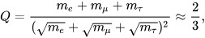Де:
me = 0.510998910(13) МеВ/c2,
mμ = 105.658367(4) МеВ/c2,
mτ = 1776.84(17) МеВ/c2,
Також детальніше про бозони:
Бозо́н (від прізвища фізика Шатьєндраната Бозе) — частинка або квазічастинка з цілим значенням спіну (0, 1, 2, ... у одиницях Планка). Одна з двох великих груп, на які поділяються всі відомі частинки, як прості так і композитні (другу групу складають частинки з напівцілим спіном — ферміони). Хвильова функція бозонів симетрична щодо перестановки частинок, тому вони підпорядковуються статистиці Бозе — Ейнштейна: у одному квантовому стані може перебувати необмежена кількість однакових частинок.
До бозонів належать: фотони, W і Z бозони, мезони і антимезони, нейтральні атоми водню або гелію-4, фонони тощо.
На відміну від ферміонів, елементарні бозони не мають античастинок. Відповідно, кількість бозонів не зберігається, тоді як баріонне і лептонне число — не змінюються при реакціях елементарних частинок.
У багатьох випадках коливанням різних полів у твердому тілі можна поставити у відповідність частинки (за принципом корпускулярно-хвильового дуалізму). Такі поля не існують окремо від тіла, у якому вони розповсюджуються, тому відповідні частинки називають квазічастинками. Багато квазічастинок, такі як фонон і магнон є бозонами. Також важливими квазічастинками-бозонами є зв'язаний стан електронів куперівська пара — два електрона, що об'єднуються завдяки взаємодії з фононами (ці частинки відіграють важливу роль у механізмі надпровідності) або екситон — зв'язаний стан електрона і дірки.
Антимате́рія — будь-яка речовина, що складається з античастинок — антипартнерів частинок, що складають звичайну матерію.
Будь-яка частинка має свого антипартнера: позитрон для електрона, антипротон для протона тощо. Деякі частинки є власними античастинками, наприклад фотон — такі частинки називаються істинно нейтральними. Античастинки мають ту саму масу що й частинки, але протилежний заряд, лептонне і баріонне число. При зіткненні частинки зі своєю античастинкою вони анігілюють, перетворюючись на фотони, нейтрино або інші менш масивні частинки. В процесі анігіляції маса пари частинка-античастинка повністю (у випадку перетворення на фотони), або значною мірою перетворюється на енергію за формулою E=mc2.
Античастинки взаємодіють між собою так само як і частинки, наприклад, антипротони і позитрони можуть утворювати атоми антигідрогену, а разом з антинейтронами — і більш важкі антиатоми.
Перша античастинка (позитрон) була відкрита в 1932 році Карлом Девідом Андерсоном, а перший антиатом (антигідроген) — у 1995. Наразі найскладнішим синтезованим антиатомом є антигелій.
За сучасними оцінками, антиматерія у Всесвіті практично відсутня. Причини цього — асиметрія між матерією і антиматерією у реакціях між частинками невдовзі після Великого вибуху. Конкретний механізм цієї асиметрії є однією з невирішених проблем сучасної фізики, але відома його ефективність — на кожен мільярд пар частинок-античастинок утворилася одна додаткова частинка. Період, коли відбувалися ці реакції називається баріогенезисом. Він тривав близько 10-31 секунди після Великого вибуху.
У 50-х роках фізики вже були впевнені в існуванні антипартнерів і більш важких частинок, але типових енергій космічних променів не вистачало для їх утворення, тому у 1954 році в Берклі був збудований беватрон — прискорювач елементарних частинок до енергій у 6 ГеВ. З його допомогою у 1955 році був відкритий антипротон а у 1956 році — антинейтрон.
У 1965 році було синтезоване перше антиядро — вчені з ЦЕРН отримали антидейтерій. На початку 70-х ядра антигелію-3 і антитритію були отримані на прискорювачі інституту фізики високих енергій у Протвіно. Найважче з синтезованих на даний момент антиядер — антигелій-4 було зафіксоване у 2011 році колаборацією STAR.
Для створення найпростіших антиатомів (антигідрогену) необхідно щоб антипротони і антинейтрони знаходилися поруч достатньо довгий, за мірками фізики елементарних частинок, час. Враховуючи, що античастинки, що утворюються під час високоенергетичних зіткнень зазвичай рухаються з релятивістськими швидкостями, досягти цього доволі важко. Вперше антигідроген був синтезований в ЦЕРН у 1995 році під час експерименту PS210 командою під керівництвом Вальтера Олерта.
Утворення античастинок проходить зазвичай завдяки процесу, оберненому анігіляції — процесу народження пар. Для цього необхідна енергія, більша за сумарну масу частинки й античастинки.
Найпростіші з античастинок — античастинки електронів — позитрони, виникають порівняно часто внаслідок різноманітних ядерних реакцій. Необхідна для цього енергія порівняно невелика з огляду на легкість лептонів — дещо більша за 1 МеВ.
Античастинки баріонів потребують для утворення енергію понад 1 ГеВ.
Вперше атом антиводню спостерігали в 1995 році в експерименті SP20 на прискорювачі LEAR в CERN, але тоді він існував тільки в прискорювачі протягом дуже малого часу (порядку 40 нс) і рухався зі швидкістю, близькою до швидкості світла. Всього було зареєстровано 9 атомів антиводню. Така антиматерія не підходила для вивчення властивостей, тому вчені почали конструювати «пастки», у яких її можна накопичувати та утримувати.
Для цього потрібно «остудити» антипротони, знизити їхню енергію й швидкість руху. CERN — єдиний центр у світі, що має обладнання, спеціально призначене для створення та дослідження низькоенергетичних антипротонів.
Антипротони в експерименті ALPHA виробляються в умовах вакууму, однак це не вирішує проблеми анігіляції, вони залишаються оточені звичайною матерією. Тому, щоб продовжити час життя антиречовини, вчені «сконструювали» пастку із дуже сильного й складного по конфігурації магнітного поля. При наднизьких температурах у такій пастці накопичуються атоми антиводню, отримані при з'єднанні антипротонів і позитронів, що рухаються із приблизно рівними швидкостями.
Комітет ЦЕРН створив антипротонний сповільнювач (AD) на підтримку розвитку низькоенергетичного антиводню для перевірки фундаментальних симетрій. AD вироблятиме антиводневі групи в ЦЕРНі. ЦЕРН очікує, що їх установки здатні виробляти 10 мільйонів антипротонів в хвилину.
У результаті вдалося на багато порядків збільшити час життя атомів антиводню: в експерименті ALPHA атом антиматерії існує протягом десятої частки секунди, і цього цілком достатньо для вивчення її властивостей.
Випущений з AD пучок антипротонів ще сповільнюється, або проходячи через тонкі фольги (експерименти ALPHA, ATRAP), або в лінійному деселераторі з ВЧ-фокусуванням (RFQD) для експерименту ASACUSA, до 15 кеВ/c. Ці експерименти, як і завершений ATHENA, спрямовані на отримання, утримання в пастках і вивчення атомів антиматерії. Так, у 2011 році в експерименті ALPHA вдалося утримувати кілька сотень атомів антиводню протягом 15 хвилин . Для більш ефективного уповільнення пропонується побудувати ще одне кільце, ELENA (Extra Low ENergy Antiproton ring), для уповільнення випущеного AD пучка антипротонів з 5,3 МеВ до 100 кеВ кінетичної енергії.
За результатами півторарічного дослідження CERN, опублікованими 2022 року, маса матерії та антиматерії не відрізняється. Це означає, що матерія та антиматерія реагують на гравітацію однаково. Умовно кажучи, зразки їх обох падатимуть вниз без жодної різниці. Щоб перевірити припущення, команда дослідників CERN помістила антипротони та негативно заряджені іони водню в електромагнітний пристрій під назвою Пастка Пеннінга. Потрапляючи всередину, частинки рухаються по циклічній траєкторії, і, вимірюючи їхню частоту, вчені змогли обчислити їхнє відношення заряду до маси.
Анігіляція
Карло Ровеллі – італійський фізик-теоретик. Він є почесним запрошеним дослідником в Інституті теоретичної фізики Perimeter (Канада). Він пояснив, що: "Якщо електрон зустрічається з антиелектроном, вони можуть анігілювати один одного. У природі маса не зберігається: вона може зникнути. Але енергія зберігається. Маса двох частинок перетворюється на електромагнітну енергію, а саме на випромінювання або світло".
При взаємодії речовини та антиречовини відбувається їх анігіляція, при цьому утворюються високоенергетичні фотони або пари частинок-античастинок (порядку 50 % енергії при анігіляції пари нуклон-антинуклон виділяється у формі нейтрино, які практично не взаємодіють з речовиною). Анігіляція повільних нуклонів і антинуклонів веде до утворення кількох π-мезонів, а анігіляція електронів і позитронів - до утворення γ-квантів.
В результаті наступних розпадів π-мезони перетворюються на γ-кванти. Під час процесу анігіляції вивільняється значно більше енергії, ніж під час проведення термоядерної реакції. Зустріч одного грама антиречовини з одним грамом речовини може призвести до вивільнення енергії у розмірі 180 трильйонів джоулів.
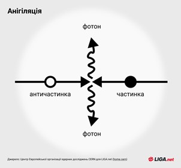При анігіляції 1 кг речовини (500 г антиматерії та 500 г матерії) може виділитися енергія близько 25 млрд кВт-год. Для порівняння, аналогічна кількість енергії виробляється в Україні за два місяці.
Анігіляція є методом переведення енергії спокою E0 частинок у кінетичну енергію продуктів реакції. При зіткненні однієї з елементарних частинок та її античастинки (наприклад, електрона та позитрону) відбувається їх взаємознищення, при цьому вивільняється величезна кількість енергії (згідно з теорією відносності, E = 2E0 = 2mc², де E0 - енергія спокою, m - маса частинки, c - швидкість світла у вакуумі).
Аннігілюющі частка і античастка не повинні бути одного типу; так, домінуючий розпад зарядженого пі-мезону π+ → μ+νμ обумовлений слабкою анігіляцією різнотипної пари кварків du у віртуальний W+-бозон, який потім розпадається в пару лептонів. Розглядається процес анігіляції позитивного мюона з електроном, аналогічний анігіляції позитрону з електроном. Цей процес експериментально поки що не спостерігався, оскільки закон збереження лептонного числа не дозволяє мюон-електронній парі (на відміну від позитрон-електронної пари) електромагнітно анігілювати у фотони та вимагає слабкої анігіляції в нейтрино. Наприклад, у мюонії — квазіатомі, що складається з μ+ та e −, — розрахункова ймовірність анігіляції в пару нейтрино μ+ + e − → νμνe становить лише 6,6×10−12 від ймовірності звичайного розпаду мюону.
Застосування антиматерії в сучасній науці
Антиречовина відома як найдорожча субстанція на Землі — за оцінками НАСА 2006 року, виробництво міліграма позитронів коштувало приблизно 25 мільйонів доларів США. За оцінкою 1999 року, один грам антиводню коштував би 62,5 трильйона доларів. За оцінкою CERN 2001 року, виробництво мільярдної частки грама антиречовини (обсяг, використаний CERN у сутичках частинок і античастинок протягом десяти років) коштувало кілька сотень мільйонів швейцарських франків.
Позитрони активно використовуються в медицині для онкодіагностики. Для цього пацієнту вводять модифіковану глюкозу, до якої приєднаний радіоактивний атом, що розпадається випромінюючи низькоенергетичний позитрон (наприклад фтор-18 або оксиген-15). У тілі цей ізотоп разом з глюкозою накопичується в тканинах, що активно поглинають глюкозу (до яких належать пухлини). Позитрон, що випромінюється при розпаді, швидко анігілює з електроном, випускаючи два ідентичних фотони, що летять у протилежних напрямках (за законом збереження енергії та імпульсу). Зафіксувавши такі фотони можна точно визначити місце, звідки вони вилетіли. Цей метод використовують для вивчення роботи мозку (ділянки мозку, що активно працюють, споживають більше глюкози) а та у кардіології.
Також антиматерія — потенційно найефективніше паливо, оскільки при анігіляції майже 100 % її маси переходить в енергію. Вперше ідею використовувати її для космічних польотів висловив Ойґен Зенґер у 1953 році. На даний час існує кілька перспективних варіантів проєктів двигунів такого роду (всі вони поки що далекі від реалізації):
- Анігіляція частинок всередині спеціальної вольфрамової матриці, яка знаходиться у камері з робочим тілом двигуна (наприклад, водень), що нагрівається від матриці і вилітає через сопла (як у звичайній ракеті);
- Нагрівання робочого тіла безпосередньо від гамма-випромінювання. Цей варіант дозволяє досягти вищих температур і швидкостей витікання, проте у ньому є небезпека розплавлення стінок камери;
- Використання явища абляції — у цьому варіанті робочим тілом є тверда пластина, атоми з якої вибиваються потоком гамма-променів.
При реалізації таких проєктів, космічні польоти можуть стати значно доступнішими — у сучасних ракетах корисне навантаження становить лише 10-20 відсотків від загальної маси ракети, а решту займає паливо і баки. Для досягнення таких показників використовують багатоступеневі ракети, але вони є більш інженерно складними і потенційно небезпечними. У той же час, для польоту на Марс достатньо енергії, що міститься у кількох міліграмах антиречовини, а отже корисне навантаження може бути на порядок вищим при спрощенні конструкції.
Оскільки наразі не відомі перспективні природні джерела античастинок, вся доступна людству антиматерія є штучною, а отже сама по собі не може бути джерелом енергії (її виробництво потребує більше енергії ніж виділиться при анігіляції), проте існують проєкти каталізу термоядерного синтезу невеликою кількістю антипротонів. У цих проєктах антипротони каталізують розпад урану, що, в свою чергу, розігріває дейтерієво-тритієву суміш до температур, при яких починається термоядерна реакція. Такі установки також пропонується використовувати в якості двигунів для космічних польотів.
Неодміно це може торкнутися і зброї. Незважаючи на велику концентрацію енергії, антиречовина не є перспективною зброєю масового ураження. Грам антиречовини при анігіляції виділить енергію у 43 кілотонни — як невелика атомна бомба. При цьому синтез граму антиречовини наразі лежить поза межами можливостей людства. З іншого боку, менш масові види зброї на антиматерії можуть бути ефективними, завдяки тому що антиматерія дозволяє зосередити велику уражальну силу на дуже маленькій ділянці.
Експерименти та дослідження
Огляд експериментів, спрямованих на вивчення антиматерії в Адронних Колайдерах
Експерименти ВАК - це близько 150 мільйонів датчиків, які передають дані 30 мільйонів разів на секунду. Після фільтрації залишається кілька сотень цікавих зіткнень на секунду. Потік даних з усіх чотирьох експериментів становить кілька Гб/с, що дає близько 50 000 000 Гб (=50 Пб) на рік, що відповідає стопці з приблизно 10 мільйонів стандартних DVD-дисків заввишки близько 12 км щороку. Доступ до цієї величезної кількості даних отримують і аналізують тисячі вчених по всьому світу. Місія обчислювальної мережі ВАК - забезпечити інфраструктуру зберігання і аналізу даних для всієї спільноти фізиків високих енергій, які використовують ВАК.
- ATLAS видає близько 1 ГБ/с
- CMS видає близько 1 ГБ/с
- LHCb - близько 0,6 ГБ/с
- ALICE виробляє кілька Гб/с під час роботи на важких іонах
ВАК досягає енергій, яких раніше не досягав жоден інший прискорювач частинок. Енергія його зіткнень частинок раніше зустрічалася лише в природі. І лише за допомогою такої потужної машини фізики можуть глибше дослідити ключові таємниці Всесвіту. Дехто висловлює занепокоєння щодо безпеки того, що може утворитися в результаті зіткнення частинок високих енергій. Однак причин для занепокоєння немає.
Жодна частинка не може рухатися зі швидкістю, більшою за швидкість світла у вакуумі; однак немає межі енергії, якої може досягти частинка. У прискорювачах високих енергій частинки зазвичай рухаються дуже близько до швидкості світла. У цих умовах, коли енергія зростає, збільшення швидкості мінімальне. Наприклад, частинки в ВАК рухаються зі швидкістю в 0,999997828 разів більшою за швидкість світла при інжекції (енергія = 450 ГеВ) і в 0,999999991 разів більшою за швидкість світла при максимальній енергії (енергія = 7000 ГеВ). Тому фізики елементарних частинок зазвичай думають не про швидкість, а про енергію частинки.
Класичне ньютонівське співвідношення між швидкістю і кінетичною енергією (K = (1/2)mv2) справедливе лише для швидкостей, значно менших за швидкість світла. Для частинок, що рухаються зі швидкістю, близькою до швидкості світла, ми повинні використовувати рівняння Ейнштейна зі спеціальної теорії відносності: K = (γ-1)mc2, де c - швидкість світла (299 792 458 м/с), а γ пов'язане зі швидкістю через γ = 1/√(1-b2); b = v/c і m - маса частинки в стані спокою.
| Кінетична енергія протона (K) | Швидкість (%c) | Прискорювач |
| 50 MeВ | 31.4 | Linac 2 |
| 1.4 ГeВ | 91.6 | PS Booster |
| 25 ГeВ | 99.93 | PS |
| 450 ГeВ | 99.9998 | SPS |
| 7 TeВ | 99.9999991 | ВАК |
Результати роботи ВАК:
- відкрито Бозон Хіггса, його масу визначено як 125,09 ± 0,21 ГеВ;
- за енергій до 8 ТеВ вивчено основні статистичні характеристики протонних зіткнень - кількість народжених адронів, їхній розподіл за швидкістю, бозе-ейнштейнівські кореляції мезонів, далекі кутові кореляції, ймовірність зупинки протона;
- показано відсутність асиметрії протонів і антипротонів;
- виявлено незвичайні кореляції протонів, що вилітають в істотно різних напрямках;
- отримано обмеження на можливі контактні взаємодії кварків;
- отримано більш вагомі, порівняно з попередніми експериментами, ознаки виникнення кварк-глюонної плазми в ядерних зіткненнях;
- досліджено події народження адронних струменів;
- підтверджено існування топ-кварка, який раніше спостерігався тільки на Теватроні;
- виявлено два нові канали розпаду Bs-мезонів, отримано оцінки ймовірностей надрідкісних розпадів B- і Bs-мезонів на мюон-антимюонні пари;
- отримано перші дані протон-іонних зіткнень на рекордній енергії, виявлено кутові кореляції, які раніше спостерігали в протон-протонних зіткненнях;
- оголошено про спостереження частинки Y(4140), яку раніше спостерігали лише на Теватроні в 2009 р.
Що стало відомо про Бозон Хіггса?
Хоча швидкість зіткнення частинок у ВАК дуже висока, швидкість утворення бозона Хіггса дуже мала. Експериментам ATLAS та експерименту CMS знадобилося більше двох років (2011-2012), щоб знайти достатні доказів його існування. При енергій центру мас 13 ТеВ, він утворюється приблизно в одному з мільярда зіткнень. Бозон Хіггса швидко розпадається і виявляється шляхом ідентифікації та вимірювання продуктів його розпаду. Наприклад, розпад бозона Хіггса на два високоенергетичних фотонів має ймовірність близько 0,2 % - отже, лише 1 з 500 утворених бозонів Хіггса можна виявити в такий спосіб.
4 липня 2012 року, науковці та журналісти зібралися в ЦЕРНі та віддалено по всьому світу, щоб оголосити про відкриття нової фундаментальної частинки, бозона Хіггса. Відкриття, зроблене в результаті співпраці ATLAS1 і CMS2 в цілому Адронний колайдер (БАК) з'явився майже через 50 років після того, як теоретики постулювали існування такої частинки. Значення відкриття полягало не тільки в тому, що було знайдено нову, довгоочікувану частинку, а й у тому, що існування цієї частинки дає перше пряме свідчення того, що навколо нас існує новий вид фундаментального "поля", відомого як поле Хіггса.
Як ми побачимо нижче, сила взаємодії між будь-якою частинкою і полем Хіггса безпосередньо впливає на фундаментальну властивість цієї частинки: її масу. Таким чином, він зрештою визначає розмір атомів, робить протон стабільним і встановлює часову шкалу радіоактивності ( β) розпадається, що, наприклад, впливає на час життя зірок. Однак у повсякденному житті ми не помічаємо, що поле Гіггса оточує нас усюди. Єдиний спосіб виявити поле Гіггса - це збурити його, це приблизно те ж саме, що кинути камінь у воду і побачити брижі. Частинка, відома як бозон Гіггса, є проявом такого збурення.
Значення його відкриття у 2012 році було таким, що через рік Нобелівську премію присудили Франсуа Енглерту та Пітеру Хіггсу, які разом із покійним Робертом Браутом першими обговорили потенційну важливість такого поля для фундаментальна фізика. Відтоді бозон Хіггса став потужним інструментом для вивчення того, як поле Хіггса, що лежить в його основі, впливає на фундаментальні частинки Стандартної моделі. Крім того, всюдисущість поля Хіггса означає, що бозон Хіггса сьогодні широко використовується для пошуку сигнатур частинок або ефектів, які досі невідомі та лежать поза Стандартною моделлю.
| Частинка, маса якої задається взаємодією з полем Хіггса | Роль мас частинок | Вплив на повсякденне життя | Чи підтверджено експериментально взаємодію частинок Хіггса? |
| Up-кварк (mup ≈ 2,2 МеВ c –2) Даун-кварк (mdown ≈ 4,7 МеВ c–2) | Впливає на масу протона і нейтрона | Різниці в масах кварків (mup < mdown) сприяють тому, що протони (що складаються з двох верхніх і одного нижнього кварків) легші за нейтрони (що складаються з одного верхнього та двох нижніх кварків). У результаті протони стабільні, як це необхідно для існування водню. | Немає |
| Електрон | Атомний радіус ∝ 1/мв | Інше значення маси електрона змінило б рівні енергії та хімічні реакції всіх відомих елементів. | Немає |
| W бозон | Швидкість радіоактивного бета-розпаду ∝ 1/мВт 4 | Багато радіоактивних розпадів і реакцій термоядерного синтезу, які живлять Сонце, включають бозон W. Маса W впливає на швидкість усіх цих реакцій. | Так |
У Стандартній моделі, крім бозона Хіггса, є два типи частинок. Існують ферміони, такі як верхній і низький кварки та електрон, які складають звичайну матерію. Ці специфічні частинки (разом з одним із трьох нейтрино) називаються ферміонами першого покоління. Ще два набори ферміонів (друге і третє покоління) включають більш важкі частинки, яких зазвичай немає в навколишньому світі.
Крім того, існують носії сили: фотон, W і Z бозони та глюон, які разом називають векторними бозонами. Коли вони обмінюються між двома ферміонами, вони створюють силу тяжіння або відштовхування між цими ферміонами: фотони несуть електромагнітну силу, W та Z бозони слабкої сили та глюони сильної сили.
Під час розробки електрослабкої частини стандартної моделі, взаємодії частинок із полем Хіггса мали стати центральною частиною його формулювання, особливо для того, щоб генерувати маси для бозонів W та Z, як це вимагається для узгодженості з експериментальними спостереженнями, тоді як фотони та глюони залишаються безмасовими.
Відповідно до Стандартної моделі існує щільність потенціальної енергії, пов’язана зі значенням поля Хіггса, і найменша потенційна енергія відповідає ненульовому значенню поля Хіггса. Потенціал стандартної моделі має форму, яка визначається умовами внутрішньої узгодженості. З деякими спрощеннями, позначаючи величину поля Хіггса як φ , потенціал має вигляд:
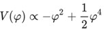Мінімум потенціалу, тобто енергетично найбільш вигідний вибір для ϕ, лежить при значенні ϕ , що не дорівнює нулю, ϕ = 1. Важливий висновок ненульового постійного значення Хіггса поле — це неможливість перенесення кутового моменту або, більш технічно, «спін 0». Ненульове значення обертання порушило б принаймні одну з добре перевірених просторово-часових симетрій. Отже, збудження поля Хіггса, бозон Хіггса, має бути частинкою зі спіном 0, і це фактично єдина відома фундаментальна частинка з цією властивістю.
Щільність потенціальної енергії V(φ), пов’язана з полем Хіггса ϕ, як функція значення φ. Червона крива показує потенціал стандартної моделі. Поле Хіггса має значення, що відповідає мінімуму потенціалу, а область, виділена чорним, представляє наші поточні експериментальні знання про потенціал. Альтернативні потенціали, які суттєво відрізняються від стандартної моделі далеко від цього мінімуму (наприклад, синя крива), однаково відповідатимуть поточним даним.
Експериментальні дослідження бозона Хіггса відбуваються на колайдерах частинок. Імовірність утворення бозона Хіггса під час зіткнення стає більшою, коли частинки, які стикаються, сильно взаємодіють із полем Хіггса, тобто коли вони важкі. При високих енергіях центру мас, які необхідні, фізики елементарних частинок знають, як зіткнутися лише з двома речами: протонами та електронами, а також їхніми античастинками. Це створює проблему, оскільки електрони та частинки, що утворюють протони, легкі, тобто вони дуже слабко взаємодіють із бозоном Хіггса.
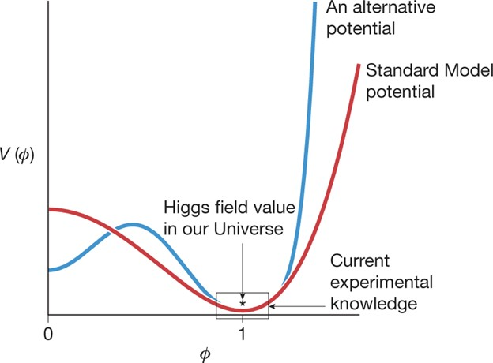Підхід фізиків елементарних частинок полягає в тому, щоб використати випадкове утворення важких частинок під час високоенергетичних зіткнень легких частинок, щоб потім ці важкі частинки створювали бозон Хіггса. LHC CERN стикає протони, які в основному складаються з кварків і глюонів. Найчастіший спосіб утворення бозона Хіггса полягає в тому, що пара глюонів, по одному з кожного протона, стикається і створює топ-кварк і топ-антикварк як дуже короткочасну квантову флуктуацію. Топ-кварк є найважчою з відомих частинок (приблизно в 184 рази перевищує масу протона), тому топ- і антитоп-кварки сильно взаємодіють з полем Хіггса, іноді утворюючи бозон Хіггса. Трохи пізніше (приблизно через 10−22 s) бозон Хіггса розпадається. Близько 2,6% розпадів припадає на пару Z-бозонів, які також розпадаються майже миттєво, наприклад, кожен на електрон-позитрон або мюон-анти -мюонна пара (так звані заряджені лептони), яка дає характерний експериментальний підпис. Ця послідовність проілюстрована на рис.
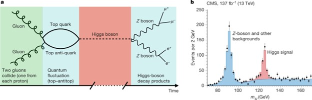a, Ілюстрація одного процесу утворення та розпаду бозона Хіггса на LHC.
b, Загальна енергія центру маси чотирьох лептонів (електрони та/або мюони та їхні античастинки) з експерименту CMS; пік біля 125 ГеВ відповідає розпадам бозонів Хіггса, тоді як пік біля 91,2 ГеВ відповідає розпадам одиночних Z бозонів (не індукованих Хіггсом). Розпад до Z бозонів був одним із каналів, використаних для відкриття бозона Хіггса, а іншими важливими каналами відкриття був розпад до двох W бозонів, а той до двох фотонів (останній відбувається через квантову флуктуацію з топ-кварками та W.
Експерименти ATLAS і CMS на LHC відбирають події з чотирма такими лептонами та записують загальну енергію лептонів (у системі їхнього центру мас). Існує багато способів утворення чотирьох лептонів, але для тих подій, у яких вони походять від розпаду бозона Хіггса, очікується, що загальна енергія згрупується навколо маси Хіггса — червоний пік на рис. бозонами. Цей останній момент має вирішальне значення, оскільки механізм стандартної моделі Хіггса передбачає дуже специфічну силу взаємодії кожної частинки з бозоном Хіггса. Цей червоний пік надає значну інформацію:
- наявність піку поблизу 125 ГеВ говорить нам про наявність нової частинки, бозона Хіггса;
- положення піку вказує на масу бозона Хіггса;
- інші особливості подій у піку, наприклад, відносний кутовий розподіл лептонів (не показано на малюнку), підтверджують, що бозон Хіггса не має власного кутового моменту, тобто це частинка зі спіном 0;
- кількість подій у піку чутлива до сили взаємодії бозона Хіггса як з топ-кварками.
Експерименти на Великому адронному колайдері (LHC) шукають бозон Хіггса в багатьох процесах утворення та розпаду, кожен з яких має додаткову чутливість.
Наприклад, можна спостерігати розпад бозона Хіггса в подіях, у яких топ-кварки є не просто швидкоплинними квантовими флуктуаціями, а натомість утворюються як короткоживучі реальні частинки, які виникають самі по собі в результаті зіткнення разом із бозоном Хіггса, і може бути виявлено експериментально.
Багато розширень стандартної моделі передбачають існування нових бозонів.
Темна матерія може складатися з невідомих нам легких бозонів — кандидатом на цю роль є аксіон.
Суперсиметричні теорії передбачають існування слептонів — суперсимметричних партнерів лептонів. Такі частинки носять відповідні назви селектрон, смююн і т.д. Якщо слептони існують, то вони є надзвичайно важкими.
Теорія великого об'єднання передбачає існування єдиної взаємодії, в яку зливаються слабка, сильна і електромагнітна взаємодія за надвисоких енергій. Носіями такої взаємодії є X та Y бозони.
Гексакварки — гіпотетичні мезони, що складаються з шести кварків. Наразі існує кілька кандидатів на таку частинку, проте вони все ще не є підтвердженими. Деякі варіанти гексакварків є дуже стабільними, тому теж розглядаються як кандидати у темну матерію.
ВИСНОВОК
В результаті дослідження було розглянуто будову великого адронного колайдера, його призначення та цілі а також було детально досліджено результати досліджень. Побудованна і розібрана частинка Стандартої моделі.
Аналізуючи наукову тему, ми зрозуміли, як побудован адронний колайде, як відкриття антиматерії, базонів і лептонів допомогло розширити стандартну модель. Надалі, якщо буде більше досліджень в CERN, то вважаю що вони будуть спрямованні на дослідження темної матерії, можливого «гравітрона». На мою думку, це може стати наступною моею дослідницькою працею.
Зроблено висновок, адронний колайдер – це ключ для розуміння всесвіту. А все що було відкрито та дослідженно тільки маленька частинка відкрить які ще треба дослідити.
СПИСОК ВИКОРИСТАНИХ ДЖЕРЕЛ:
- Вікіпедія – вільна енциклопедія. [Електронний ресурс].
- Офіціальний сайт CERN. [Електронний ресурс].
- Брощура з СERN. [PDF]
- Tokar.ua — незалежне україномовне ЗМІ.[Електронний ресурс].